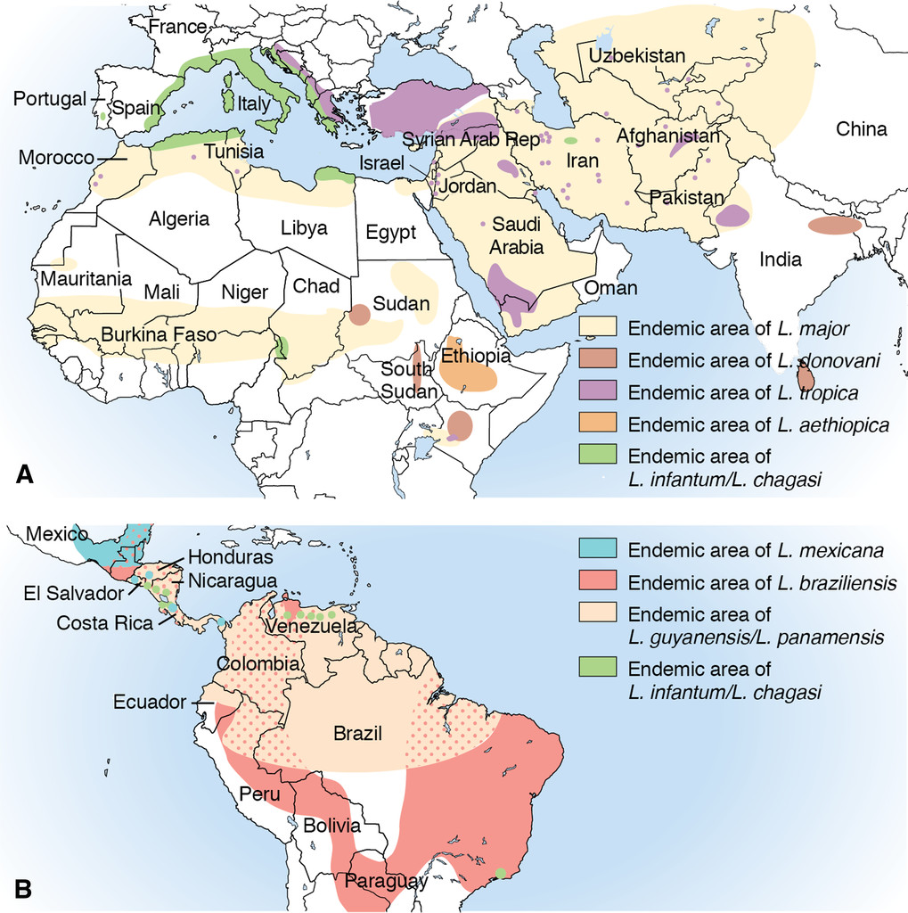
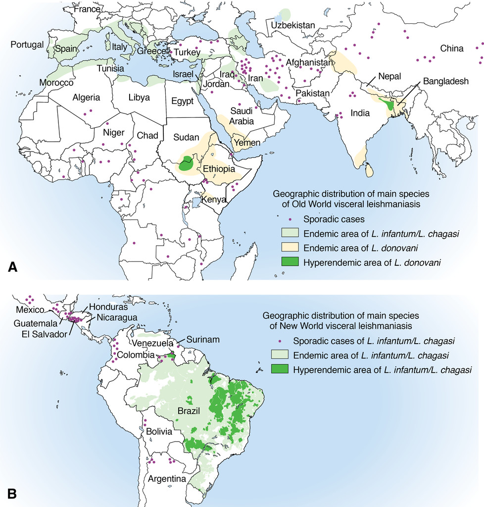

Leishmaniose
Protozoaire intracellulaire — genre Leishmania, transmis par les phlébotomes
Trois formes cliniques majeures — cutanée, mucocutanée et viscérale — dont le pronostic et le traitement dépendent de l'espèce infectante. L'identification par PCR est la clé de la prise en charge. Plus d'un milliard de personnes vivent en zone à risque.
Épidémiologie
Données mondiales
- > 1 milliard de personnes vivent en zone endémique et sont à risque d'infection[1]
- Estimation : 700 000 – 1 million de nouveaux cas de leishmaniose cutanée (LC) et ~30 000 nouveaux cas de leishmaniose viscérale (LV) par an ; 20 000 – 30 000 décès annuels[1,16]
- LC endémique dans > 90 pays ; LV endémique dans > 75 pays
- Incidence mondiale de la LV : baisse de 58 % entre 2014 et 2024 ; le Bangladesh est le premier pays à éliminer la LV comme problème de santé publique (2023)[16]
- Feuille de route OMS 2021–2030 : éliminer la LV comme problème de santé publique + contrôle renforcé de la LC
Données européennes
- Réseau LeishMan (15 centres européens, 11 pays, 2014–2019) : 1 142 cas diagnostiqués ; 76 % LC, 21 % LV, 3 % LM ; 68 % hommes, âge médian 37 ans[5]
- LV principalement acquise en Europe (88 %) — surtout bassin méditerranéen (L. infantum)
- LC principalement importée hors Europe (77 %) ; 62 % Ancien Monde, 38 % Nouveau Monde
- Belgique (2010–2018) : traitement spécifique à l'espèce associé à un meilleur résultat (guérison 81,8 % vs 57,9 %, p = 0,045)[9]
Contexte suisse
- Première expérience suisse publiée de traitement spécifique à l'espèce : 61 cas de LC/LM importés (1999–2011), identification par PCR[13]
- Cas fatal (Berne, Inselspital) : LV à L. donovani chez un patient immunodéprimé de 80 ans, latence > 15 ans après exposition en Inde — échec thérapeutique à l'AmBisome liposomale[11]
- Canton du Tessin : phlébotomes (Phlebotomus perniciosus) présents dans 75 % des sites étudiés (2022–2023) ; séroprévalence L. infantum chez les chiens domestiques : 3,0 % — risque de transmission autochtone encore très faible mais en surveillance[12]
⚠ Latence extrême
La LV peut se réactiver > 15 ans après l'exposition initiale, en particulier chez les patients immunodéprimés. Un séjour ancien en zone endémique reste pertinent dans l'anamnèse.[11]
Répartition géographique
Leishmaniose cutanée

| Espèce | Régions endémiques | Particularités |
|---|---|---|
| Ancien Monde | ||
| L. major | Afrique du Nord, Moyen-Orient, Asie centrale | Zoonotique ; ulcérations humides ; guérison spontanée 3–6 mois |
| L. tropica | Moyen-Orient, Asie centrale, Afrique de l'Est | Anthroponotique ; lésions plus sèches ; guérison lente (12–18 mois) ; risque de leishmaniose récidivante |
| L. aethiopica | Éthiopie, Kenya (hauts plateaux) | Risque de forme cutanée diffuse |
| L. infantum | Bassin méditerranéen | Formes cutanées atypiques possibles |
| Nouveau Monde | ||
| L. braziliensis | Brésil, Bolivie, Pérou, Colombie, Amérique centrale | Risque de progression mucocutanée → traitement systémique obligatoire |
| L. panamensis | Panama, Costa Rica, Colombie | Sous-genre Viannia ; risque mucocutané |
| L. guyanensis | Guyane française, Suriname, nord du Brésil | Sous-genre Viannia ; pentamidine = traitement de choix |
| L. mexicana | Mexique, Guatemala, Belize | Guérison spontanée possible ; traitement local souvent suffisant |
Leishmaniose viscérale

| Espèce | Régions endémiques | Particularités |
|---|---|---|
| L. donovani | Sous-continent indien, Afrique de l'Est | Anthroponotique ; PKDL possible après traitement |
| L. infantum | Bassin méditerranéen, Amérique latine (Brésil) | Zoonotique (chien = réservoir) ; surtout enfants et immunodéprimés en Europe |
Formes cliniques
Leishmaniose cutanée (LC) — Ancien Monde
- Papule indolore au site de la piqûre de phlébotome, évoluant vers nodule puis ulcération à bords surélevés
- Lésion unique ou multiple, zones exposées (visage, membres)
- L. major : ulcérations souvent humides, guérison spontanée en 3–6 mois avec cicatrice
- L. tropica : lésions plus sèches, guérison plus lente (jusqu'à 12–18 mois), risque de leishmaniose récidivante
- Données LeishMan : parmi les LC importées en Europe, L. tropica retrouvée chez 80 % des migrants, L. major chez 53 % des VFR (visiting friends and relatives)[6]
Leishmaniose cutanée (LC) — Nouveau Monde
- Ulcérations similaires à celles de l'Ancien Monde, mais plus souvent complexes
- L. braziliensis et les espèces du sous-genre Viannia : risque de progression mucocutanée imposant un traitement systémique[14]
- Revue Cochrane (75 RCT, 6 533 patients) : miltéfosine et antimoniaux augmentent les taux de guérison vs placebo[20]
⚠ Sous-genre Viannia = traitement systémique obligatoire
Toute LC acquise en Amérique latine doit faire suspecter L. braziliensis ou une autre espèce Viannia. Le risque de progression mucocutanée (1–10 %) interdit un traitement uniquement local sans identification d'espèce.[14]
Leishmaniose mucocutanée (LMC)
- Principalement L. braziliensis (sous-genre Viannia), parfois L. panamensis, L. guyanensis
- Dissémination métastatique aux muqueuses nasales, oropharyngées — mois à années après la LC initiale
- Destruction progressive du cartilage nasal, palais, lèvres — potentiellement mutilante et mortelle
- > 90 % des cas en Bolivie, Brésil, Éthiopie et Pérou[1]
- Formes atypiques : L. infantum peut aussi causer une LMC, habituellement chez immunodéprimés[26]
- Réactivation possible même chez l'immunocompétent : cas allemand de LMC linguale par L. infantum — opérée initialement comme cancer suspecté[25]
⚠ LMC confondue avec un cancer
Les lésions muqueuses de leishmaniose sont souvent prises pour des néoplasies. Biopsie avec PCR systématique en cas de lésion muqueuse chez tout patient ayant séjourné en zone endémique.[25]
Leishmaniose viscérale (LV / kala-azar)
- Fièvre prolongée ondulante, splénomégalie +++, hépatomégalie, amaigrissement, pancytopénie
- Hypergammaglobulinémie polyclonale caractéristique
- Mortalité sans traitement : > 95 % dans les 2 ans[1]
- En Europe : surtout L. infantum chez immunodéprimés (VIH, transplantés, anti-TNF) et enfants
- Rechutes fréquentes chez VIH+ (jusqu'à 60 % à 1 an sans prophylaxie secondaire)[18]
- Rare chez le voyageur immunocompétent ; plus fréquent chez les migrants
| Forme clinique | Espèces principales | Incubation | Signes clés |
|---|---|---|---|
| LC Ancien Monde | L. major, L. tropica | 1 sem. – plusieurs mois | Papule/ulcère indolore, zones exposées |
| LC Nouveau Monde | L. braziliensis, L. mexicana | 1 sem. – plusieurs mois | Ulcère ; risque mucocutané si Viannia |
| LMC | L. braziliensis | Mois à années post-LC | Destruction muqueuse naso-buccale |
| LV (kala-azar) | L. donovani, L. infantum | 2 sem. – > 10 ans | Fièvre, splénomégalie, pancytopénie |
Post-kala-azar dermal leishmaniasis (PKDL)
Complication cutanée après traitement de la LV (surtout L. donovani) : éruption maculaire, papulaire ou nodulaire apparaissant des semaines à années après la guérison. Rarement observé en Europe.[1]
Biologie
Leishmaniose cutanée
- Bilan sanguin habituellement normal
- Pas de marqueur biologique spécifique — le diagnostic repose sur l'examen de la lésion
Leishmaniose viscérale
- Pancytopénie : leucopénie, anémie, thrombopénie (infiltration médullaire)
- Hypergammaglobulinémie polyclonale (IgG +++) — très évocatrice
- Hypoalbuminémie, syndrome inflammatoire (CRP, VS élevées)
- Élévation possible des transaminases
- Chez le VIH+ : parasitémie souvent élevée, bilan plus sévère
Diagnostic
Leishmaniose cutanée
| Méthode | Sensibilité | Spécificité | Commentaire |
|---|---|---|---|
| Frottis / biopsie (Giemsa) | 50–70 % | ~100 % | Visualisation directe des amastigotes ; sensibilité variable selon technique et ancienneté de la lésion |
| Culture | 60–85 % | ~100 % | Promastigotes en moyenne après 3,6 jours ; permet identification d'espèce |
| PCR sur biopsie/frottis | > 90 % | > 95 % | Gold standard pour identification d'espèce (qPCR ciblant ITS1, kDNA ou hsp70)[2] |
| PCR sur paraffine (FFPE) | 70–90 % | > 95 % | Utile si histopathologie non concluante |
| Histopathologie | Variable | Variable | Granulome avec amastigotes intracellulaires ; peut mimer d'autres pathologies |
Biopsie en médecine de premier recours
Le médecin généraliste peut réaliser la biopsie : punch 4 mm sur le bord actif de la lésion. Envoyer le prélèvement au centre de référence pour PCR avec identification d'espèce — indispensable pour orienter le traitement.[14]
Leishmaniose viscérale
| Méthode | Sensibilité | Spécificité | Commentaire |
|---|---|---|---|
| TDR rK39 | 85–97 % | 92–99 % | Méthode diagnostique primaire pour la LV ; sensibilité variable par région (élevée en Asie du Sud, plus faible en Europe)[1] |
| DAT | 91–100 % | 72–100 % | Bonne performance en zone méditerranéenne |
| IFAT / ELISA | 80–98 % | 85–95 % | Sérologie de référence dans de nombreux centres européens |
| PCR sang / moelle | > 95 % | > 95 % | Très sensible sur sang périphérique ou aspiration médullaire |
| Aspiration médullaire (Giemsa) | 60–85 % | ~100 % | Gold standard historique ; invasif |
| Aspiration splénique | > 95 % | ~100 % | Risque hémorragique — réservée aux centres spécialisés |
⚠ Sérologie faussement négative chez le VIH+
Chez les patients VIH+, la sensibilité de la sérologie (rK39, IFAT) est réduite à 30–70 %. Préférer la PCR ou la microscopie sur moelle osseuse pour le diagnostic de LV dans ce contexte.[18]
Données danoises : positivité PCR 17 % vs sérologie 1,4 % dans les prélèvements testés — la sérologie ne devrait être utilisée que si la LV est spécifiquement suspectée[10]. En Belgique, l'identification de l'espèce améliore significativement le résultat thérapeutique (p = 0,045)[9].
Traitement
Principe fondamental
Le traitement de la leishmaniose relève du spécialiste. La stratégie thérapeutique dépend de : (1) la forme clinique, (2) l'espèce infectante, (3) l'état immunitaire du patient. Le rôle du MG est de suspecter, biopsier et référer.[14,15]
LC Ancien Monde
Observation seule (watchful waiting) :
- L. major : guérison spontanée fréquente en 3–6 mois — traitement indiqué si : lésion > 4 cm, lésions multiples, localisation fonctionnelle/esthétique (visage, articulations), immunosuppression, absence de guérison après 3 mois
- L. tropica : guérison plus lente ; seuil de traitement plus bas[14]
Traitements locaux (lésion unique, < 4 cm, non compliquée) :
- Cryothérapie (azote liquide)
- Thermothérapie (ThermoMed, 50 °C × 30 s)
- Injection intralésionnelle d'antimoine pentavalent (Glucantime) — taux de guérison 86 % pour L. tropica[6]
- Paromomycine topique
Traitements systémiques (lésions multiples, complexes, ou échec local) :
- Fluconazole 200 mg/j × 6 semaines (pour L. major — efficacité modérée)
- Miltéfosine 2,5 mg/kg/j × 28 jours (tératogène — contraception obligatoire)
- Antimoine pentavalent systémique : 20 mg/kg/j × 20 jours (cardiotoxicité : surveiller le QTc)
- Amphotéricine B liposomale IV (si échec ou contre-indication)[15]
LC Nouveau Monde — traitement spécifique à l'espèce
| Espèce | Traitement de 1re ligne | Alternative |
|---|---|---|
| L. braziliensis | Antimoine pentavalent 20 mg/kg/j × 20 j ou miltéfosine 2,5 mg/kg/j × 28 j | AmBisome IV |
| L. panamensis | Miltéfosine 2,5 mg/kg/j × 28 j | Antimoine pentavalent |
| L. guyanensis | Pentamidine 3–4 mg/kg × 3 doses | Miltéfosine |
| L. mexicana | Traitement local souvent suffisant | Miltéfosine si complexe |
Sources : recommandations LeishMan 2014[14] et IDSA/ASTMH 2016[15]
| Données d'efficacité — Bolivie (L. braziliensis)[19] | ||
|---|---|---|
| Traitement | Guérison LC | Guérison LM |
| Glucantime IM | 67 % | 54 % |
| Glucantime IV | 71 % | 63 % |
| Miltéfosine p.o. | 75 % | 70 % |
| Glucantime intralésionnel | 63 % | — |
| AmB déoxycholate IV | — | 54 % |
Leishmaniose mucocutanée (LMC)
- Toujours un traitement systémique
- Première ligne : amphotéricine B liposomale (AmBisome) 3 mg/kg/j × 7 jours, puis J14 et J21 (dose totale ~20–40 mg/kg)[15]
- Alternative : antimoine pentavalent 20 mg/kg/j × 30 jours (durée plus longue que pour la LC)
- Miltéfosine : données limitées mais utilisé en pratique
- Suivi prolongé obligatoire — rechutes possibles même après traitement apparemment efficace
Leishmaniose viscérale (LV)
Immunocompétent — région méditerranéenne (L. infantum) :
- Première ligne : Amphotéricine B liposomale (AmBisome) — dose totale 20 mg/kg ; schéma usuel : 3 mg/kg/j aux J1–5, puis J14 et J21[22]
- Traitement de choix en Europe ; > 30 ans d'expérience clinique
- Effets indésirables : néphrotoxicité (réversible), hypokaliémie, réactions liées à la perfusion
- Alternative : miltéfosine 2,5 mg/kg/j × 28 jours (voie orale — surtout pour L. donovani en Asie du Sud)
- Antimoine pentavalent : moins utilisé en Europe (cardiotoxicité, pancréatotoxicité)[24]
Coinfection VIH :
- AmBisome dose totale 40 mg/kg (dose plus élevée nécessaire)[18]
- Prophylaxie secondaire obligatoire : AmBisome 3–5 mg/kg toutes les 2–4 semaines jusqu'à CD4 > 200/mm³ pendant > 6 mois sous ARV
- Rechutes très fréquentes sans prophylaxie (jusqu'à 60 % à 1 an)
Patients immunodéprimés non-VIH :
- LC sous anti-TNF : risque de dissémination — nécessité de traitement systémique même pour des lésions cutanées isolées[30]
- Penser à la leishmaniose chez tout patient immunodéprimé ayant séjourné en zone méditerranéenne[29]
⚠ Effets indésirables graves
Revue systématique (157 études, 35 376 patients) : 804 événements indésirables graves rapportés dont 428 décès ; mortalité nettement plus élevée en cas de coinfection VIH. La surveillance rapprochée est indispensable pendant le traitement.[21]
Prévention
- Pas de vaccin disponible pour l'homme (recherche en cours — pipeline DNDi actif en 2024)[31]
- Pas de chimioprophylaxie recommandée
- Moustiquaires imprégnées d'insecticide à mailles fines (les phlébotomes mesurent ~2–3 mm, plus petits que les moustiques)[17]
- Répulsifs cutanés : DEET ≥ 30 %, icaridine, PMD
- Vêtements couvrants, imprégnés de perméthrine
- Activité crépusculaire et nocturne des phlébotomes — protection surtout en soirée/nuit
- Le chien est le réservoir principal de L. infantum en Méditerranée — colliers insecticides pour chiens contribuent à la réduction de la transmission humaine[12]
Pièges & perles cliniques
Lésion cutanée chronique au retour de voyage = penser à la leishmaniose
Toute lésion papulaire, nodulaire ou ulcéreuse non cicatrisante chez un voyageur de retour d'une zone endémique doit faire évoquer la LC. Diagnostic différentiel : pyodermite, mycose profonde, mycobactériose atypique, sarcoïdose, carcinome basocellulaire. Erreur fréquente : traitements antibiotiques répétés sans amélioration. En Norvège, le délai diagnostique médian de la LV était de 7–8 semaines.[8]
Sous-genre Viannia = jamais de traitement local seul
Toute LC acquise en Amérique latine nécessite une PCR avec identification d'espèce. Si L. braziliensis ou une autre espèce Viannia est identifiée, un traitement systémique est obligatoire pour prévenir la progression mucocutanée — même des mois à années plus tard.[14]
LV chez l'immunodéprimé — sérologie non fiable
Devant fièvre prolongée + pancytopénie + splénomégalie chez un patient VIH+ ou sous immunosuppresseurs ayant séjourné en Méditerranée, évoquer la LV. La sérologie est souvent faussement négative (30–70 %) — préférer la PCR ou la microscopie sur moelle osseuse.[18]
LMC confondue avec un cancer
Toute lésion muqueuse chez un patient exposé aux zones endémiques doit faire évoquer la LMC. Cas allemand (2025) : ulcère lingual à L. infantum opéré comme cancer suspecté. Biopsie avec PCR systématique.[25]
Perle : PCR = clé du diagnostic ET du traitement
L'identification de l'espèce par PCR guide le choix thérapeutique et améliore significativement les résultats (guérison 81,8 % vs 57,9 % avec traitement empirique, p = 0,045). Le MG peut réaliser la biopsie (punch 4 mm, bord actif de la lésion) et envoyer au centre de référence.[9]
Conduite pratique pour le médecin de premier recours
Suspicion de leishmaniose cutanée
- Anamnèse de voyage : séjour en zone endémique (Méditerranée, Moyen-Orient, Asie centrale, Amérique latine, Afrique) — même ancien
- Biopsie cutanée : punch 4 mm sur le bord actif de la lésion — envoi pour PCR (identification d'espèce) + histopathologie
- Référer au spécialiste avec le résultat de la PCR pour décision thérapeutique adaptée à l'espèce
- En cas de LC du Nouveau Monde : ne jamais se contenter d'un traitement local sans identification d'espèce
Suspicion de leishmaniose viscérale
- Triade évocatrice : fièvre prolongée + splénomégalie + pancytopénie chez un patient ayant séjourné en zone endémique
- Bilan biologique : NFS, CRP, transaminases, albumine, électrophorèse des protéines (hypergammaglobulinémie polyclonale)
- Sérologie (rK39 ou IFAT/ELISA) — mais si VIH+ : préférer la PCR sanguine
- Référer en urgence au spécialiste — la LV est mortelle sans traitement
Suspicion de lésion muqueuse
- Évoquer la LMC devant toute lésion muqueuse naso-buccale chez un patient ayant séjourné en Amérique latine
- Biopsie avec PCR systématique — ne pas opérer comme néoplasie présumée sans avoir exclu la leishmaniose
- Rechercher un antécédent de LC (cicatrice ancienne ?)
Quand référer ?
- Toute leishmaniose confirmée ou fortement suspectée — le traitement relève du spécialiste
- Toute LC du Nouveau Monde avant traitement (risque mucocutané)
- LC de l'Ancien Monde : après biopsie avec PCR, si traitement systémique nécessaire
- Suspicion de LV : référer en urgence (mortalité > 95 % sans traitement)
- Tout patient immunodéprimé avec LC ou LV (prise en charge complexe, prophylaxie secondaire)
Références
- Pareyn M, Alves F, Burza S, et al. Leishmaniasis. Nat Rev Dis Primers 2025;11:81. DOI
- de Vries HJC, Schallig HD. Cutaneous Leishmaniasis: A 2022 Updated Narrative Review into Diagnosis and Management Developments. Am J Clin Dermatol 2022;23(6):823-840. DOI
- Mathison BA, Bradley BT. Review of the Clinical Presentation, Pathology, Diagnosis, and Treatment of Leishmaniasis. Lab Med 2023;54(4):363-371. DOI
- Mann S, Frasca K, Scherrer S, et al. A Review of Leishmaniasis: Current Knowledge and Future Directions. Curr Trop Med Rep 2021;8(2):121-132. DOI
- Van der Auwera G, Davidsson L, Buffet P, et al. Surveillance of leishmaniasis cases from 15 European centres, 2014 to 2019. Euro Surveill 2022;27(4):2002028. DOI
- Glans H, Dotevall L, Van der Auwera G, et al. Treatment outcome of imported cutaneous leishmaniasis among travelers infected with L. major and L. tropica. Int J Infect Dis 2022;122:375-381. DOI
- Velechovska J, Fabianova K. Epidemiological analysis of leishmaniasis in the Czech Republic in 1997-2024. Epidemiol Mikrobiol Imunol 2025;73(4):216-223. DOI
- Müller KE, Blomberg B, Tellevik MG, et al. Leishmaniasis in Norway. Tidsskr Nor Laegeforen 2021;141(3). DOI
- Vandeputte M, van Henten S, van Griensven J, et al. Epidemiology, clinical pattern and impact of species-specific molecular diagnosis on management of leishmaniasis in Belgium, 2010-2018. Travel Med Infect Dis 2020;38:101885. DOI
- Zangenberg M, Helleberg M. Leishmaniasis in Denmark. Ugeskr Laeger 2024;186(17). DOI
- Eichenberger A, Buechi AE, Neumayr A, et al. A severe case of visceral leishmaniasis and liposomal amphotericin B treatment failure in an immunosuppressed patient 15 years after exposure. BMC Infect Dis 2017;17:81. DOI
- Ravasi D, Schnyder M, Guidi V, et al. Exploring Emerging Challenges: Survey on Phlebotomine Sand Flies and L. infantum at the Northern Endemic Border in Europe (Switzerland). Pathogens 2024;13(12):1074. DOI
- Mosimann V, Neumayr A, Hatz C, Blum J. Cutaneous leishmaniasis in Switzerland: First experience with species-specific treatment. Infection 2013;41(6). DOI
- Blum J, Buffet P, Visser L, et al. LeishMan recommendations for treatment of cutaneous and mucosal leishmaniasis in travelers, 2014. J Travel Med 2014;21(2):116-129. DOI
- Aronson N, Herwaldt BL, Libman M, et al. Diagnosis and treatment of leishmaniasis: clinical practice guidelines by the IDSA and the ASTMH. Clin Infect Dis 2016;63(12):e202-e264. DOI
- OMS. Global leishmaniasis surveillance updates 2024. WER 2025;100(45):535-552. Lien
- CDC. Leishmaniasis — Yellow Book 2026. Lien
- NIH. Leishmaniasis: Guidelines for the Prevention and Treatment of Opportunistic Infections in Adults and Adolescents With HIV (2024). Lien
- Soto J, Gutierrez P, Soto P, et al. Treatment of Bolivian Leishmania braziliensis Cutaneous and Mucosal Leishmaniasis. Am J Trop Med Hyg 2022;106(4):1182-1190. DOI
- Pinart M, Rueda JR, Romero GA, et al. Interventions for American cutaneous and mucocutaneous leishmaniasis (Cochrane Review). Cochrane Database Syst Rev 2020;8:CD004834. DOI
- Singh-Phulgenda S, Dahal P, Ngu R, et al. Serious adverse events following treatment of visceral leishmaniasis: A systematic review and meta-analysis. PLoS Negl Trop Dis 2021;15(3):e0009302. DOI
- Brüggemann RJ, Jensen GM, Lass-Flörl C. Liposomal amphotericin B — the past. J Antimicrob Chemother 2022;77(Suppl_2):ii3-ii10. DOI
- Parkash V, Laundy N, Durojaiye OC. Outpatient parenteral antimicrobial therapy for leishmaniasis: 13 years' experience. Trans R Soc Trop Med Hyg 2023;117(6):473-475. DOI
- Gu Y, Tong X, He Y, et al. Efficacy and safety of different drugs for the treatment of leishmaniasis: a systematic review and network meta-analysis. Front Cell Infect Microbiol 2025;15:1717863. DOI
- Eggers Y, Holtfreter M, et al. A rare case of lingual mucosal leishmaniasis caused by reactivation of Leishmania infantum infection. BMC Infect Dis 2025;25:234. DOI
- Berrezouga L, Kooli I, Belgacem S, et al. Mucosal leishmaniasis of the lips and cheeks: concomitant VL and mucosal leishmaniasis in HIV/AIDS, Tunisia. AIDS Res Ther 2024;21:73. DOI
- de Arruda JAA, Tomo S, et al. Mucosal Leishmaniasis of the lip: Report of an Exuberant case in a Young man. Head Neck Pathol 2022;17(2):540-545. DOI
- Joseph S, Whitman TJ, et al. Miltefosine Failure and Spontaneous Resolution of Cutaneous Leishmaniasis braziliensis. Am J Trop Med Hyg 2021;105(1):142-143. DOI
- Carujo A, Reis J, et al. Complicated Cutaneous Leishmaniasis in a Patient under Combined Immunosuppression. Acta Med Port 2023;36(12):841-845. DOI
- Neumayr ALC, Morizot G, et al. Clinical aspects and management of cutaneous leishmaniasis in rheumatoid patients treated with TNF-alpha antagonists. Travel Med Infect Dis 2013;11(6):412-420. DOI
- DNDi. 2024 R&D programmes in review: Leishmaniasis. 4 mars 2025. Lien
- OMS. Target product profile for a diagnostic test to confirm cure of visceral leishmaniasis. 2024. Lien